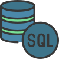
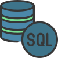

**Mduduzi Abdul Mahlangu** *Web Developer and Computer Programmer* 📚 **Education:** - Currently pursuing a Bachelors Degree in Applied Technology - Currently pursuing a Certificate in Web Development - Certificate in Web and Computer Programming 🌟 **Passionate about Bridging Creativity and Technology** Hello there! I'm Abdul, a dedicated and motivated student in the field of Applied Technology, specializing in web and computer programming. While I may not have any formal work experience yet, I am an enthusiastic learner with a strong foundation in web development and programming principles. 🖥️ **Certificate in Web and Computer Programming:** My journey in technology began with the successful completion of my Certificate in Web and Computer Programming. During this program, I gained valuable skills in programming languages such as HTML, CSS, JavaScript, and more. I learned the art of creating interactive and user-friendly websites, which has ignited my passion for web development. 🚀 **Pursuing Excellence in Web Development:** Currently, I am diligently working towards obtaining another certificate, this time in Web Development. This program is equipping me with advanced skills, including front-end and back-end web development, database management, and responsive design. I am eager to put these skills into practice and contribute to the ever-evolving digital landscape. 🌐 **Future Goals:** My ultimate goal is to become a proficient web developer, capable of creating innovative and engaging web solutions. I am excited about the endless possibilities that the world of technology offers and look forward to applying my knowledge to real-world projects. 💡 **Passion and Dedication:** While I may not have professional experience yet, my passion for technology, continuous learning, and dedication to honing my skills are driving me to excel in this field. I believe that with determination and a hunger for knowledge, I can make a meaningful impact in the world of web development. 📧 **Contact:** I am always open to connecting with fellow enthusiasts, mentors, or anyone interested in tech. Feel free to reach out to me at [Your Email] or connect with me on LinkedIn [Your LinkedIn Profile] to explore potential opportunities, collaborate on projects, or simply share ideas. Thank you for taking the time to learn about me, and I'm excited to see where this tech journey takes me next! ---
My Skills


 
